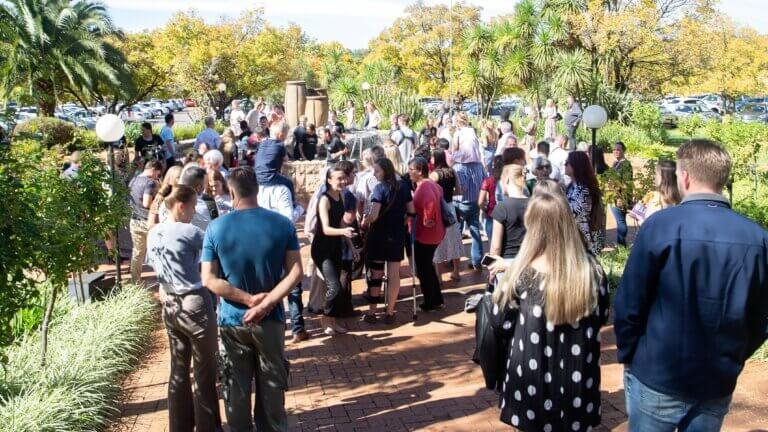
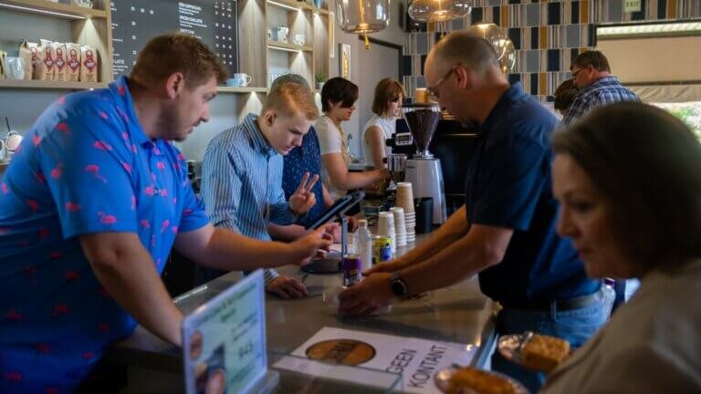

Ons is oop elke dag van die week.
Die meeste kerke wys jou Sondag. Hier is al sewe dae, met wat waar en wanneer gebeur.
VrVandag
10:00Koffiewinkel, oop vir almal
SaVandag
Stil, tensy daar ’n gemeente-geleentheid is.
Meer as ’n Sondag-adres.
’n Moderne Afrikaanse gemeente met die Bybel as fondament. Die terrein in Elarduspark loop deur die week: berading, mediese sorg, kleingroepe en ’n koffiewinkel wat vir enigeen oop is.
Jy hoef nie lid te wees om deur enige van hierdie deure te loop nie.
Op die terrein



Vyf Deure
Waar mense inkom
Eredienste
Drie op ’n Sondag, met kinder- en jeugprogramme in die oggend.
Tye →Berading Sentrum
Professionele berading vir individue, paartjies en gesinne.
Bespreek →Mediese Kliniek
Basiese mediese sorg vir die gemeente en vir Elarduspark.
Ure →Kleingroepe
Groepe deur die hele voorstad, deur die week in mense se huise.
Vind een →Gee & Winkel
Tiendes en bydraes aanlyn, of ondersteun ’n spesifieke bediening.
Gee →